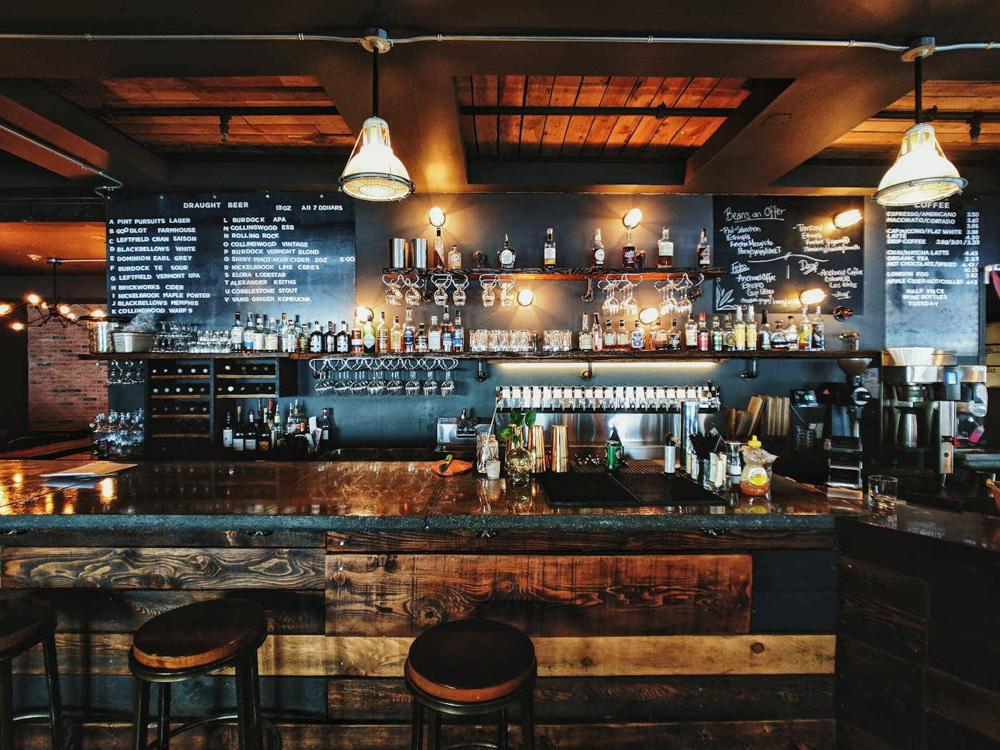
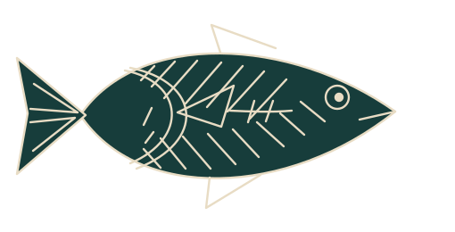

La Gilda abisal ↗
Piparra, aceituna y una anchoa que ha visto cosas.
TABERNA DE MERCADO Y OTROS FONDOS
SAN AGUSTÍN, GRANADA · PREGUNTA POR LA ESCALERA DE ABAJO
El de arriba ya lo arreglamos ayer.
Hoy toca una de boquerones y ver qué pasa.


En algún lugar, justo debajo del Mercado de San Agustín, hay una barra donde las aceitunas flotan y los relojes marcan la hora del aperitivo.
Se llama Inframarinos. Aquí se viene a lo de toda la vida: pedir una caña, compartir una ración y arreglar el mundo. Aunque sea otro.
Mismo barrio. Otra dimensión. ↝
PIDE ALGO. PASA ALGO.
En Granada la tapa acompaña a la bebida.
Aquí, además, viene de un universo distinto.
La barra está lista. Tú dirás.
POR SI PREGUNTAS DÓNDE ES
Mercado de San Agustín
Granada, Andalucía · Tierra B
Baja por la escalera que no aparece en los planos.
Si oyes una conversación y un plato de aceitunas,
vas bien.
HORARIO DE ESTE UNIVERSO
No hacemos reservas.
Hacemos hueco en la barra.
DEJA EL MUNDO ARRIBA.
Aquí abajo